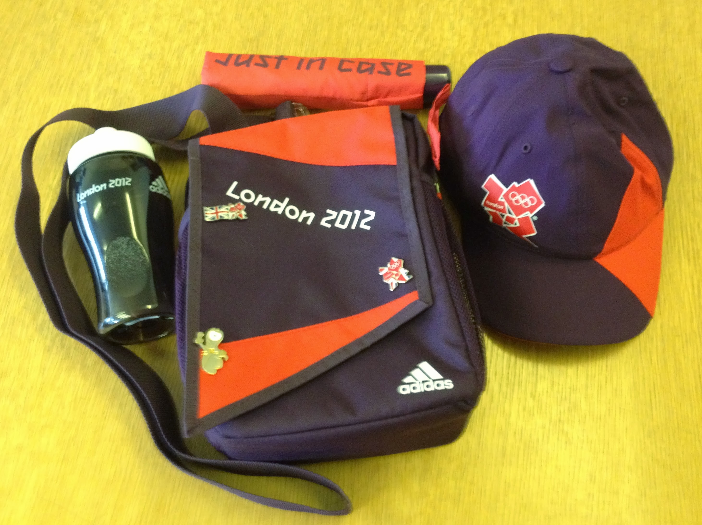

Uniform/Accreditation Collection
Friday 1st June 2012
The trip to collect my uniform and accreditation started with Virgin Trains Wilmslow to Euston (First Class
Traveller), Victoria Line to Oxford Circus, Central Line to Stratford, then DLR to Star Lane (Oyster Card checked). From there it was a 1
minute walk to UDAC, which was a large warehouse in the East End. I arrived at 9:50am and joined the back of the queue. I chatted to a guy
based at the Hilton Hotel, Park Lane who will be checking accreditation, and a women who will be front of house at ExCel.

The doors opened at 10am, and we snaked around the queue lanes waiting for registration. Got chatting to a T3 FDO based guy who had yet to
have his role training. Gave him an overview of what was what. Once at initial registration I handed over my passport and unique reference
number, confirmed my Date of Birth, was handed a piece of paper containing my name and number, and told to follow the yellow line on the floor.
This took us around the corner to have a digital photo taken. I didn't have to remove my glasses, but there was great emphasis on ensuring no
Cotton Traders or other non official sponsors logos were showing. We then followed the orange line to where the paper accreditation was
printed out, put in a plastic folder for lamination, and heated into the proper accreditation with the proper neck ribbon attached.
The next queue checked that your accreditation worked by scanning the barcode on the accreditation, a uniform form was assigned, and you took
your number as per the deli queue to check the trainer size you needed. Next was an individual cubicle in the female area to work out the
polo shirt, jacket and trousers required. XXL top and jacket were picked first time,
but the trousers were more of an issue. Ended up with XXXL male trousers. Once the uniform form was filled out, you went to collection area.
An Adidas bag with all the generic stuff (umbrella, water bottle, bag, swatch watch,
baseball cap) was collected first, then the form was handed over to get the correct size < a href="https://photos.app.goo.gl/XHqrsvp3DRcpPx6b6">
polo shirts (2) and jacket, then 2 pairs of trousers, and then 2 pairs of grey socks
and trainers.
The next queue was to check out the uniform. Each item was scanned through the computer, and repacked before you signed for what you had got.
Final stop was the portacabin to get your Olympic Volunteer Oyster card. I bought a Team GB baseball cap you can only buy at an Olympic venue
before leaving UDAC at 11.20. Reverse trip back to Euston included forgetting to slap my Oyster card at Star Lane, and having to plead with
the card inspector that it was my first time on the DLR. He let me off. Had a pint of Redemption Trinity in the Euston Tap beer garden whilst
people watching, then a Virgin voyager train home via Crewe and the job was a good un.